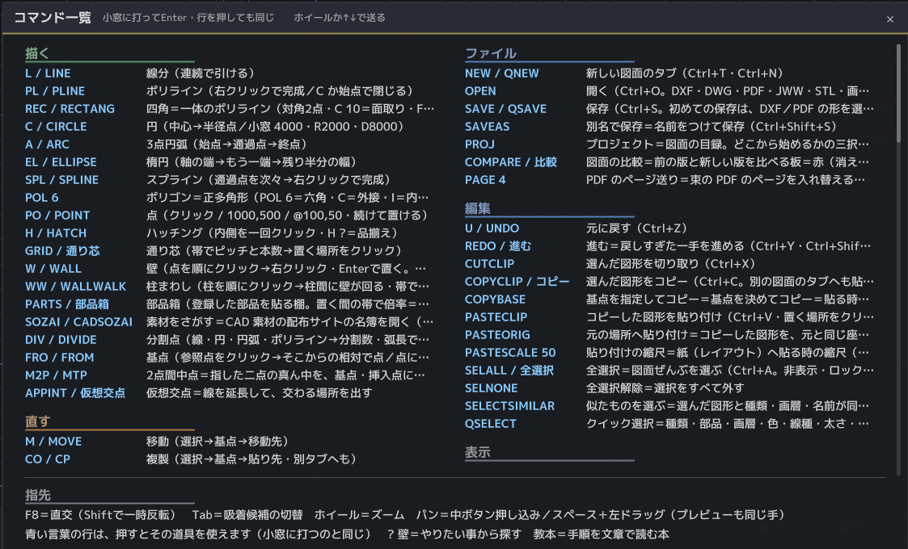
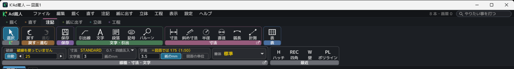

日本語 English
1. はじめに（画面の間取り）
いまは、この用事だけを出しています。 この章をぜんぶ見る
この教本について

コマンド一覧（？）は「名簿」、この教本は「読み物」です。
カーソルの動かし方・キー・コマンドの手順を、文章で説明します。
開き方は三つあります。
- メニューバー「ヘルプ」の【教本】
- 小窓（画面下のコマンド欄）に 教本 と打って Enter
- コマンド一覧（？）の足元の一言から
小窓に 教本 9 のように章の番号を添えると、その章から開きます。
同じ本文に絵を添えた「手引き」が、縁側屋にもあります＝
メニューバー「ヘルプ」の【手引き（ブラウザで開く）】で開きます
（engawaya.com/kad/tebiki/ 別の窓で開いて、見ながら進められます）。
画面の間取り

- いちばん上＝メニューバー（ファイル・編集・描く・直す・注記・紙に出す・立体・工程・表示・設定・ヘルプ）。道具は全部ここに居ます。名前の右に、小窓で打つ言葉（L や TR）が添えてあります。右端の「やりたい事を打つ」を押すと、小窓に「? 」が置かれます。続けて言葉を打って Enter＝その言葉で道具を探します（例 ? 壁）。
- その下＝仕事の順のタブ（描く／直す／注記／紙に出す／立体／工程）と、リボン。選んだタブの道具だけが、リボンの一段に並びます。左端の 選択・戻す・進む・保存 と、右端の「最近」（直前に使った道具が四つまで）は、どのタブでも同じ場所に居ます。ボタンには小窓の言葉（L や TR）が添えてあります＝ボタンは言葉の先生です。全部の棚を一度に並べたい時は、設定の板の「リボンをタブで並べる」を切ります（その姿では、棚の順番を「リボンの並び」で入れ替えられます）。棚の帯の右端の小さな取っ手を押すと、その棚だけ手元に浮かべられます。浮いた板は掴んで動かせて、×を押すとリボンへ帰ります。浮いた板の格子のボタンで「アイコンだけ」の小さな姿にもできます（名前はボタンに指を置くと出ます）。画面の縁まで引いて放すと、そこに着きます（左右＝縦の帯・上下＝横の列。⋮⋮を掴んで引き出すと浮きに戻ります）。画層コントロールの右の取っ手で、画層バーだけを手元に浮かべることもできます。
- タブ「注記」の右寄り＝「線種・寸法・文字」の欄。破線の目盛り・寸法スタイル（▼と文字高）・これから打つ字高（紙のmm／図面の単位）・書体を、その場で見て直せます。掴んで浮かべられ、×でリボンの棚へ帰ります。
- リボンの下＝図面のタブ。図面の一枚一枚。＋で新しい図面が開きます。
- 真ん中＝製図台。図面はここに実寸で置かれています。
- 製図台のすぐ下＝空間タブ（モデル｜レイアウト1）。上のタブが「どの図面か」、下のタブが「その図面のどの紙か」です。モデル＝実物大で描く所。レイアウト＝紙。くわしくは第14章の【レイアウト（紙の空間）】へ。
- カーソルの脇＝案内の札。「次に何をするか」を未来形で言います。
- 下の帯＝小窓と、規律・距離DYN・スナップ・グリッドのチップ。小窓には「小窓：CommandLine」の名札が上に、打ち方の案内がすぐ下に添えてあります＝言葉と数字の受付です。小窓は三行＝上の二行が履歴（「さっき何をしたか」を過去形で言います）、いちばん下が打つ行。小窓の上でホイールを回すと履歴を遡れます。もっと見たい時は、小窓の上で右クリック＝履歴の大窓が開きます。
- 右側＝画層・部品箱・プロパティの板。見出しを掴んで動かせて、×で閉じられます。置いた場所は覚えます。



この家の物差し＝1 は 1作図単位
図面は「作図単位」で描きます。1 は 1作図単位。
その1をミリと読むか、メートルと読むか、インチと読むかは、
描く人の自由です。CADの世界そのものが単位を持ちません——
DXFのどこにも「これはミリ」とは書かれていません。
だからK'Adも、単位を名乗りません。
1000 と描いた線は、1000作図単位の線です。ミリのつもりなら
1メートル、メートルのつもりなら1キロメートル。決めるのは、
あなたです。
寸法も、座標も、同じ作図単位で数えます。物は実寸で描きます。
縮尺（1:50 など）は、図面が一つ持っています。新しい図面は 1:50。
縮尺が決めるのは、物の大きさではなく、紙の側です。
- 字と寸法の大きさ＝紙で何ミリ、で決めます（紙の 3.5mm は、1:50 の図面で 175）。
- 製図台の点線の四角＝いまの用紙と縮尺の「紙」。
替えるのは、小窓の 縮尺 5（＝1:5）か、ページ設定・印刷の板で。
どれも同じ一つを替えます。替えるまで、勝手には動きません。
＝物は実寸で描く、縮尺は紙の約束。これがこの家の背骨です。
※紙の話（用紙A4・線の太さ・破線のきざみ）だけは、本当のミリです。プリンタから出てきた紙を定規で測った長さだからです。
困ったら
- カーソル脇の札が、いつでも「次なにする？」を教えます。
- Esc は「一歩さがる」。掴んでいた物を放し、開いていた窓を閉じます。困ったら、まず Esc です。
- まちがえたら U（元に戻す）。何度でも戻れます。戻しすぎたら ⌘Y（進む）。ひと押しで取り返せます。
この手引きの文は、K'Ad蔵人の中の教本（メニューバー「ヘルプ」の【教本】）と同じものです。
教本を直せば、この手引きも同じ日に直ります。
絵は Windows 版の画面です（2026年11月に撮り直しました）。Mac 版では、Ctrl が ⌘、Alt が ⌥ になります。
教本を直せば、この手引きも同じ日に直ります。
絵は Windows 版の画面です（2026年11月に撮り直しました）。Mac 版では、Ctrl が ⌘、Alt が ⌥ になります。